Rebuilding Paradise
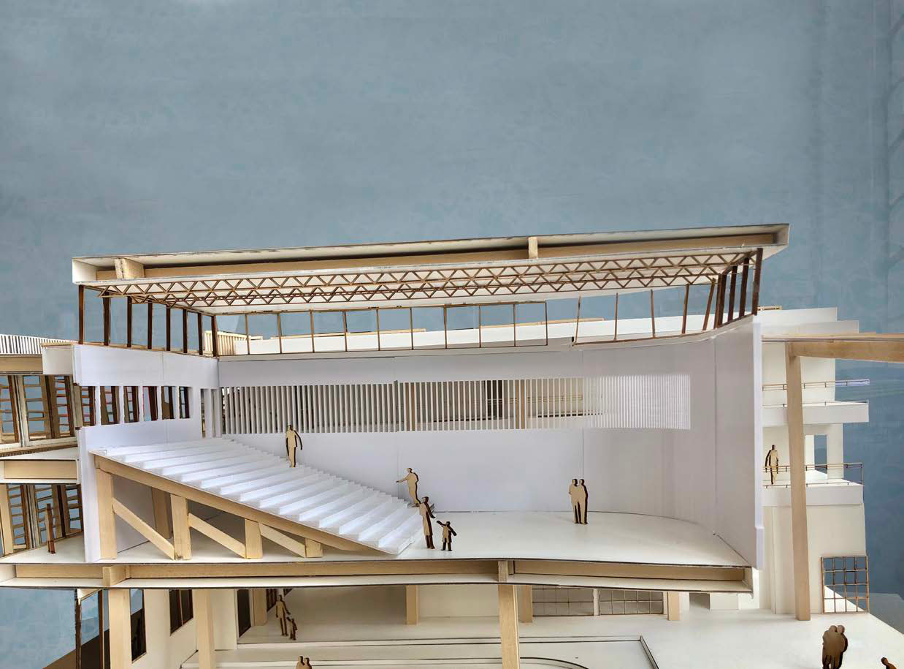
- Type
- Third-year studio, Winter/Spring 2019
- School
- California Polytechnic State University, San Luis Obispo
- Professor
- Stacey White
- Partner
- Nathan Chudnovsky
- Collaboration
- ZGF Architects
- Location
- Paradise, California
- Press
- Cal Poly · KCBX · Good Morning SLO video
A town hall for a community rebuilding after disaster: resilient, healthy and a sign of what is possible.
Three months after the 2018 Camp Fire, our studio worked with the Town of Paradise to imagine its future. Together with ZGF Architects, the studio developed a full plan for the town, and I designed a new town hall and courthouse with centralised services and an outdoor plaza.
Presented to
Paradise residents and the Camp Fire Long Term Recovery Working Group, the California Architects Board, the 2019 AIA Conference in Las Vegas, and Good Morning SLO.
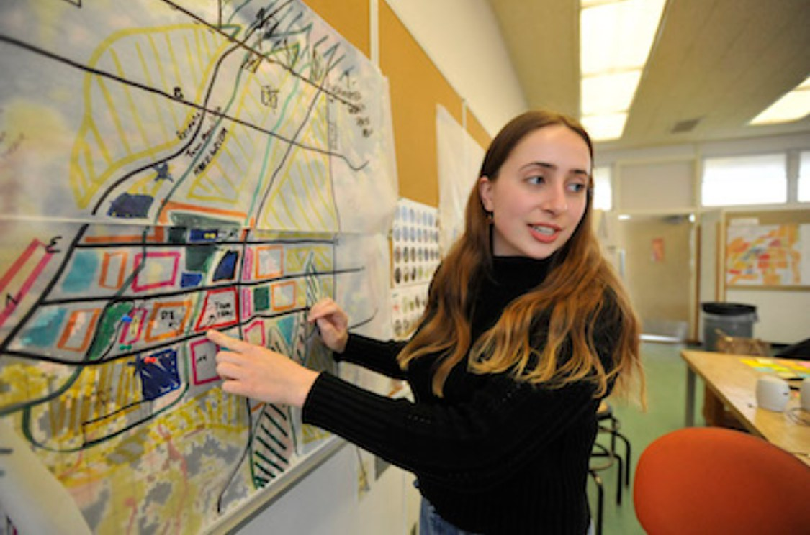
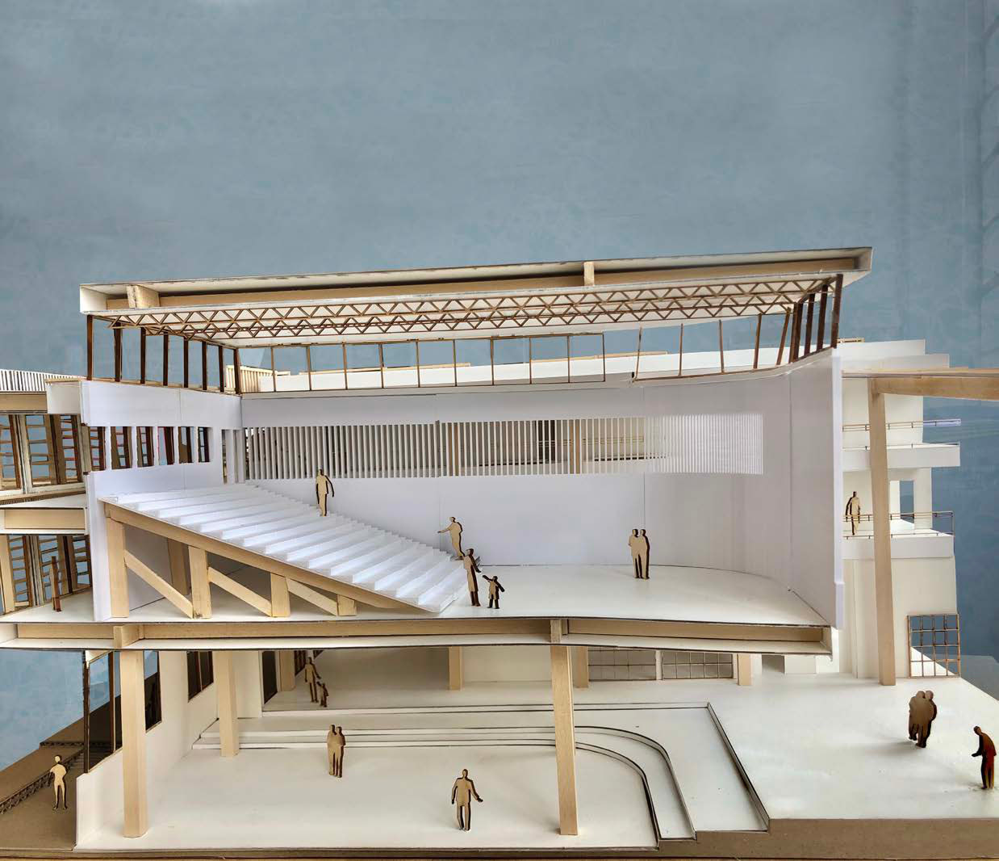
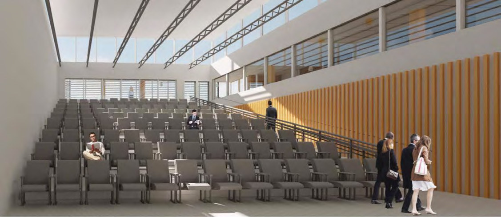
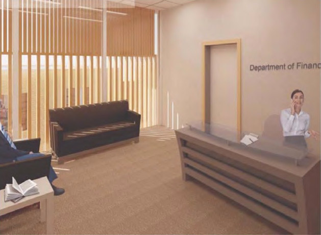
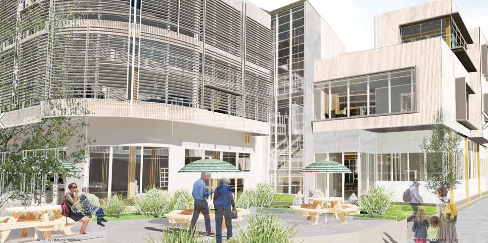
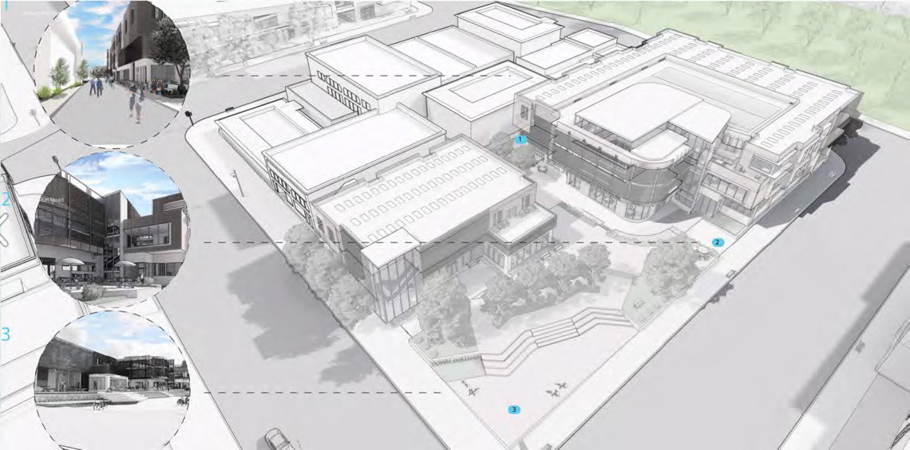
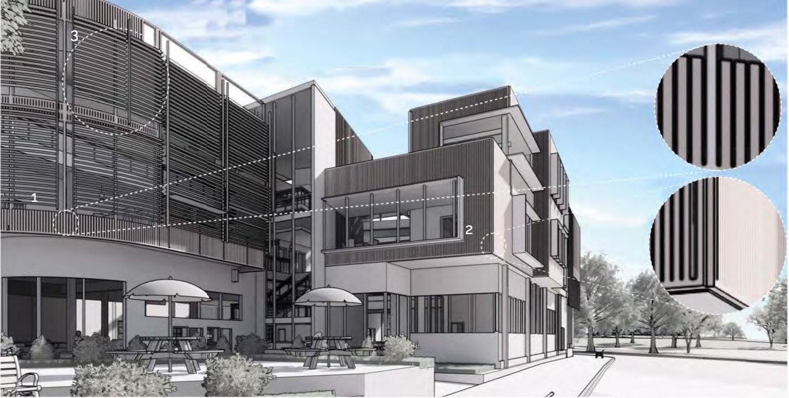
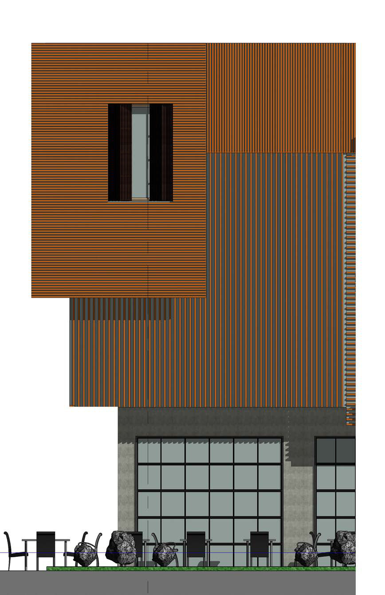
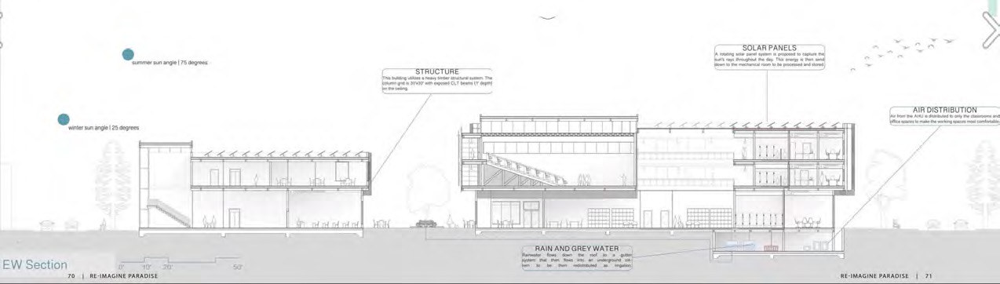
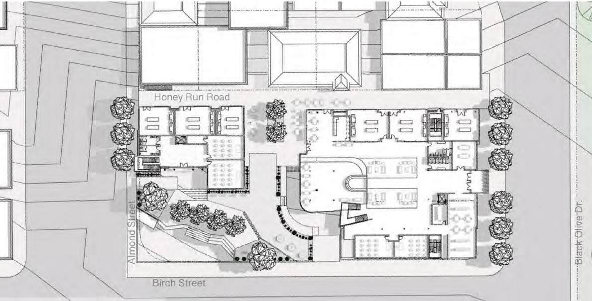

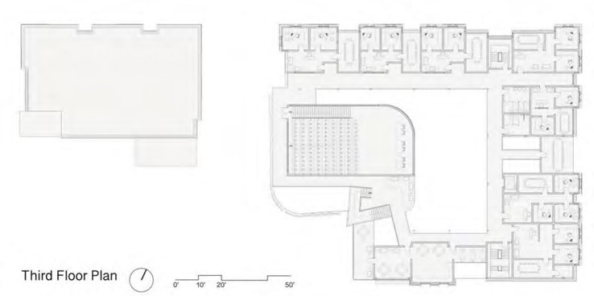
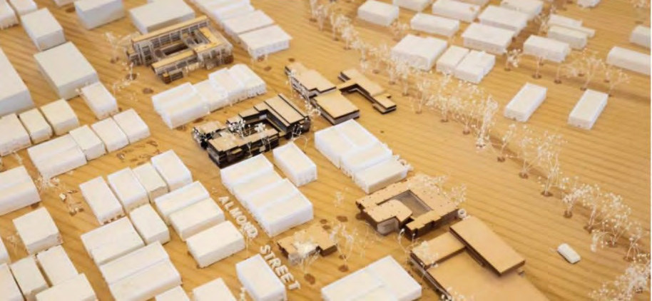
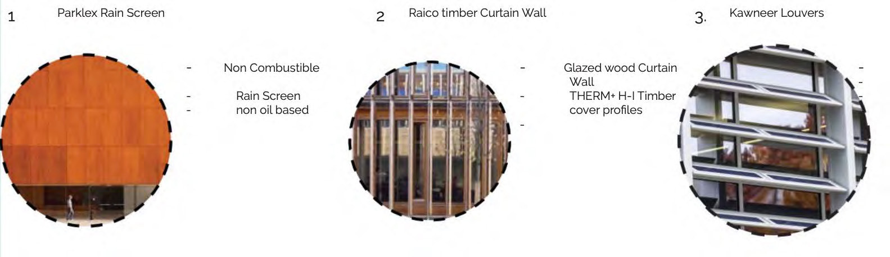